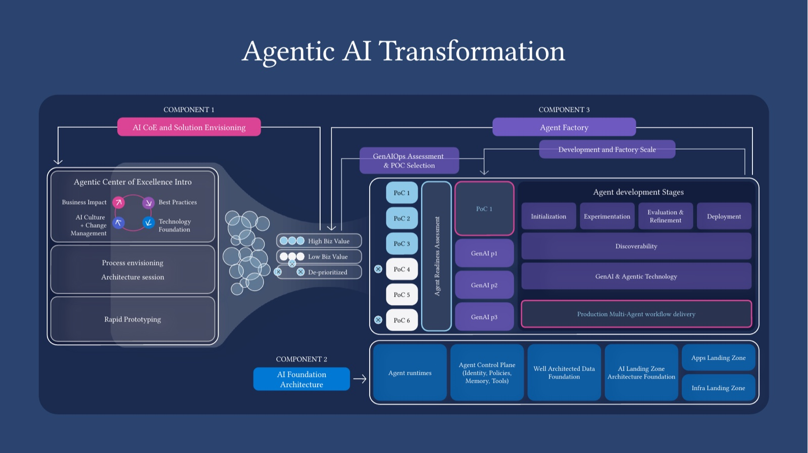
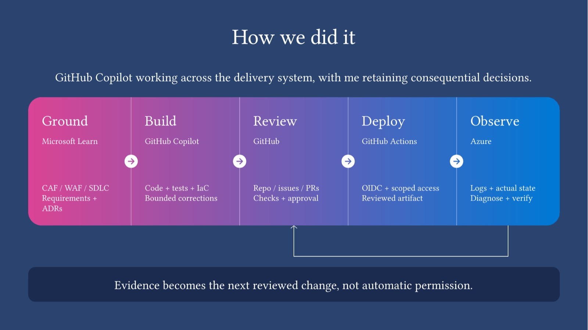
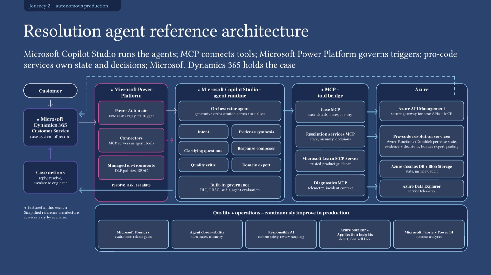
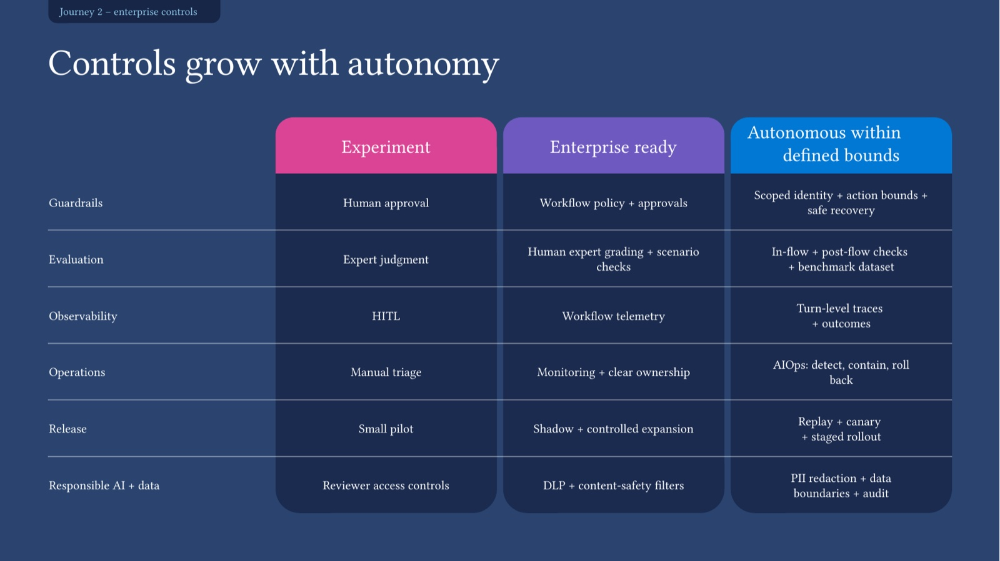
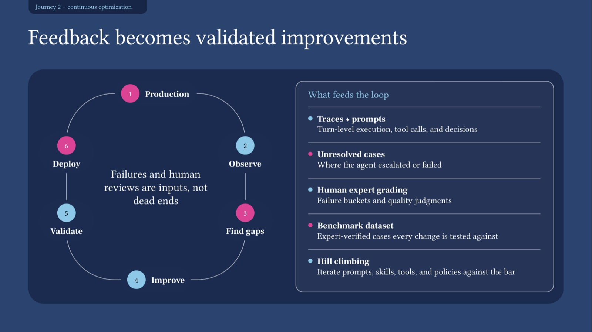

BRK285 官方课件 Slide 09
智能体转型三大支柱：卓越中心、基础底座与智能体工厂
组件 1 负责高价值用例筛选，组件 2 提供着陆区与控制面底座，组件 3 以标准化流水线批量交付多智能体方案 [1][2]。
01 / Production Trust Gap
BRK285 开场的两次现场举手提问直接戳破了企业智能体落地的最大错觉：全场大半听众都已经搭出过能给出实用回答的智能体，但当主讲人追问“谁敢不逐条审批就直接放它进生产系统执行动作”时，举手者寥寥无几 [1]。Azure 云运营需求工程（CODE）团队首席客户工程经理 Omprakash Reddy Adudodla 指出，演示原型只回答“它能不能工作”，而企业生产系统追问的是“我们能否信任它、看清它，并在工具超时或推理跑偏时安全兜底” [1][2]。
在实际排障场景中，智能体最隐蔽的风险并非胡言乱语，而是“针对错误的资源给出一段措辞完美的诊断” [1]。如果自主监控智能体仅仅告知“你的应用挂了”，却搞错了目标应用或订阅边界，流畅的文本反而会拖慢工程师发现幻觉的时间 [1]。因此，BRK285 将两条看似迥异的工程路线——合作伙伴带客户从零孵化方案（旅程一）与微软 Azure 支持团队打造全自主结案系统（旅程二）——收束到同一套三阶段成熟度框架中：每个阶段的核心标尺并非“如何把人踢出局”，而是当前积累的证据允许安全委派多少决策责任 [1][2]。
| 演进阶段 | 优化重心 | 人类介入角色 | 准入与放行核心标尺 |
|---|---|---|---|
| 1. 快速试验（Experiment） | 学习速度与业务价值验证 [2] | 人工逐条审核全部输出 [1][2] | 合成数据跑通核心流程；若明天关停该智能体，团队是否会感知价值缺失 [1][2] |
| 2. 企业就绪（Enterprise-Ready） | 信任度、系统集成与风险控制 [2] | 结构化抽检、审批策略与明确归属 [2] | 接入真实权限边界与持久状态，在行动前核验证据强度与安全合规 [1][2] |
| 3. 有界全自主（Bounded Autonomous） | 生产级执行效率、规模化与自愈 [2] | 达标场景免逐单人工复核 [1][2] | 仅对质量、控制与历史证据全部达标的限定场景开放有界动作与自动回滚 [1][2] |
下方交互导览台内嵌了 BRK285 官方 Medius 点播流、原版 38 页课件下载直链与四段式逐分钟演讲时间轴，点击顶部阶段标签即可切换审阅完整议程脉络 [1][2]：
一键展开微软官方 Medius 内嵌播放器，按『成熟度总纲 → 旅程一架构重构 → 旅程二 FACS 实机排障 → 爬山闭环』四幕检索实录细节。
02 / Journey 01: Prototype to Architecture
许多企业的智能体项目始于董事会的一句“我们要上人工智能”，随后团队在一天之内拉起令人惊艳的最小可行原型，却在推向生产时陷入泥潭 [1]。微软合作伙伴解决方案架构师 Tim Schaeps 现场展示了他在一天内构建的“订单到回款（Order-to-Cash）”用例发现原型：用户输入行业与业务流程后，系统利用合作伙伴探索卡片拆解流程步骤、绩效指标与角色痛点，当场生成 8 个候选智能体用例并关联公开案例库 [1]。
然而当 Tim 回放该原型的代码演进轨迹时，隐患暴露无遗：每一次提交都在容器应用上顺手叠加新功能，直到接入 Azure Cosmos DB 存储数据时，因触犯演示租户“严禁启用公网端点”的平台安全策略而突然瘫痪 [1]。尽管代码助手帮他临时修补了连接，但这种“坏一处补一处”的被动打补丁模式根本无法支撑企业级运维 [1]。Tim 由此给出了一条反直觉的实战忠告：在生成式编码时代，推倒脆弱原型按边界重写的成本极低；千万不要从重画漂亮前端界面开始，而必须先锁死可评审的工程契约 [1][2]。

组件 1 负责高价值用例筛选，组件 2 提供着陆区与控制面底座，组件 3 以标准化流水线批量交付多智能体方案 [1][2]。

串联 Microsoft Learn 架构锚定、GitHub 受审拉取请求、OIDC 免密发布与 Azure 线上状态核验，由架构师保留关键裁决权 [1][2][3]。
在重铸名为“Superagents”的五层虚拟企业平台时，Tim 在开发环境中直接挂载 Microsoft Learn 文档桥接服务，强制编码智能体在动笔前先检索云采用框架与卓越架构指南，列出取舍理由并停下来等待人工架构评审 [1][2][3]。整套交付流水线将指导原则转化为五条刚性工程决策，并通过开放身份联邦实现全程零密码安全部署 [1][2]：
03 / Journey 02: FACS Reference Architecture
如果说旅程一解决了“新项目如何定架构”，由 Arun Masilamani 与 Ali Ijaz 主讲的旅程二则展示了微软自身最具挑战性的生产试验田：全自主客户服务（Fully Autonomous Customer Service，简称 FACS） [1]。这套系统目前已在线上真实承接 Azure 客户技术支持工单，但它并非一上来就追求无人值守，而是耗时 18 个月从“人工逐单把关的低代码试验”一步步挣得了有界自主权 [1][2]。
在现场实机走查中，客户 Contoso 的工程师 Jordan 提交了一张应用服务报 503 Service Unavailable 的紧急故障单 [1]。工单落入 Dynamics 365 客户服务系统后由 FACS 自动接管：智能体无需追问客户索要订阅号，直接调用诊断工具查明“上午 09:08 刚完成一次新版本部署，当前 3 个实例中健康实例数为 0（0 of 3 healthy）”，精准锁定最新部署引发的启动崩溃并给出回滚指引 [1]。在回复发出前，内置审校门禁先完成了证据强度、质量与安全核验；更关键的是，智能体并未在给出建议后擅自关单，而是保留跨轮上下文追问健康检查结果，直到 Jordan 确认回滚后服务恢复正常才执行受控结案 [1]。
Ali Ijaz 特别强调，支撑这套复杂系统的秘诀不是在成熟后推倒低代码重写，而是确立“低代码做敏捷推理、全代码管持久状态”的精密分工 [1][2]。在真实的 Azure 支持场景中，一张疑难工单往往跨越数天甚至数周，中途频繁遭遇外部诊断接口超时或客户隔周追问 [1]。团队因此保留 Copilot Studio 作为主控与专员编排运行时，同时在右侧叠加 Azure Durable Functions 与 Cosmos DB 接管单案状态机与审计账本 [1][2]：

主控智能体在内部协同调度意图、证据合成、澄清追问、回复生成、质量审校与领域专家六大角色，所有外部工具统一经由 Azure API Management 安全网关接入 [1][2]。
| 架构层次与核心组件 | 不可替代的工程适配优势 | 真实生产局限与配套工程代价 |
|---|---|---|
| Microsoft Copilot Studio（智能体运行时） | 极速迭代提示词指令与六类专职子智能体，开箱自带数据防泄漏与审计治理 [2][4] | 原生会话难以支撑跨数周复杂工单的可靠恢复，需外挂单案持久状态与编排服务 [1][2] |
| Microsoft Power Platform（触发器与连接器） | 便捷监听工单新建与客户回复事件，统一实施受管环境连接器与防泄漏策略 [2] | 故障链路横跨多个底层平台团队，缺乏逐轮追踪时极难定位根因与责任归属 [1][2] |
| 模型上下文协议桥（MCP Tool Bridge） | 无需改动智能体本体即可动态挂载工单、排障记忆、官方文档与线上遥测工具 [1][2] | 每一台接入生产网的 MCP 服务器都必须独立加固网关鉴权与实时可用性监控 [2][3] |
| Microsoft Foundry（评测与质量系统） | 支撑大规模自动化评测、前沿新模型对比验证与上线发布门禁拦截 [1][2][5] | 高度依赖前期高质量专家标注基准集与定制化评分器设计投入 [1][2] |
| Azure 全代码服务（Durable Functions + Cosmos DB） | 提供确定性的单工单跨天状态持久化、工具超时自动升级兜底与可单测决策逻辑 [1][2] | 引入更高的软件研发、基础设施代码化与全天候值班运维门槛 [2] |
04 / Earned Autonomy & Controls
在从人工辅助走向自主执行的过程中，许多团队把人工复核视为“智能体不够聪明”的临时拐杖，但 Arun 提出了截然相反的工程视角：人工评审不是失败的标志，而是生产高价值训练证据、为系统挣得自主权的唯一途径 [1][2]。Arun 在现场追问听众：当人工坐席修改了智能体起草的回复时，你的系统是否结构化记录了“他为什么改” [1]？正是这些修改原因构成了首版定制评测集的核心资产 [1]。
先由资深支持专家对照定制评分量表给智能体输出打分，沉淀出第一代业务专属评测器；随后在线上开启静默影子运行，将智能体推理结果与真人工程师在同一工单上的实际处置做盲测比对 [1][2]。
摒弃按单救火的低效习惯，对执行追踪与审核批注做聚类分析，提炼共性失败分桶集中攻坚；只有当某一细分场景的质量指标、安全护栏与历史证据同时跨过红线时，才对该场景单独放开免审自主权 [1][2]。
随着自主权逐级放大，单靠人工盯屏已无法兜底风险，控制体系必须同步升级 [1]。BRK285 给出了两条不可逾越的授权铁律：绝不授予你无法解释的权限，绝不授予你无法撤销的权限 [1]。下方雷达图与官方课件矩阵清晰呈现了护栏、评测、可观测性、运维、发布与数据合规六个维度在三阶段中的同步硬化轨迹 [1][2]：

发布策略从『小范围试点 → 影子运行与受控扩面 → 历史重放 + 金丝雀灰度』逐级递进；数据安全同步收紧至敏感信息脱敏、租户边界隔离与全量审计留痕 [1][2][6]。
05 / Hill Climbing & Playbook
在演讲尾声，Ali Ijaz 坦诚分享了一个令全场共鸣的真相：即便搭好了上述整套混合架构与发布门禁，智能体在线上依然会出现幻觉 [1]。当智能体漏看启动报错日志或推理跑偏时，团队曾试图在系统提示词里反复叮嘱“请更聪明地思考、更努力地排查”，结果证明这类许愿式调优毫无作用 [1]。真正让准确率稳步攀升的，是团队围绕生产反馈建立的爬山（Hill Climbing）工程闭环 [1][2]。

汇聚逐轮追踪与提示词、升级未决工单、专家打分分桶及基准测试集，围绕提示词、技能、诊断工具与策略开展防回退爬山迭代 [1][2][5]。
在实际排查幻觉根因时，发现错误很容易，定位“究竟是技能过期、产品文档陈旧，还是诊断接口返回缺失”却极难 [1]。与此同时，Omprakash 指出了大型企业上线多平台智能体后必遇的两大组织摩擦：一是故障横跨低代码、网关与后端多个平台管理团队，出问题时极易互相推诿，团队为此全面启用逐轮追踪工作台（Trace Studio），一眼锁定哪一轮工具调用报错及对应责任团队；二是当智能体跑通后，财务部门立即追问算力账单为何高企，倒逼工程团队利用全链路可观测性同步压降时延与词元消耗 [1][6]。
06 / References: Official Primary Sources & Related Sessions